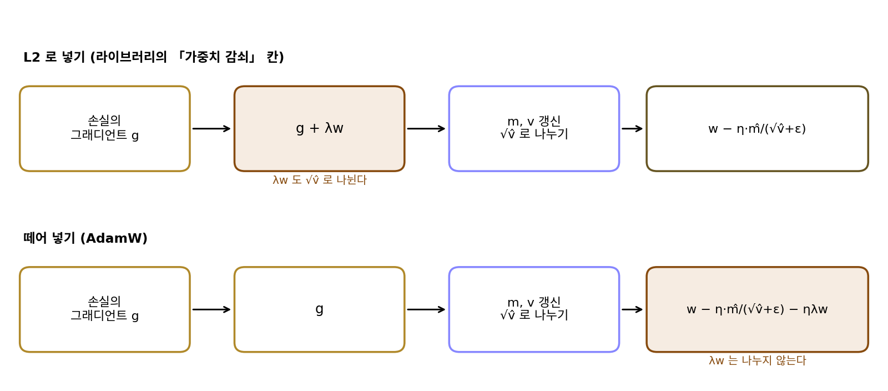
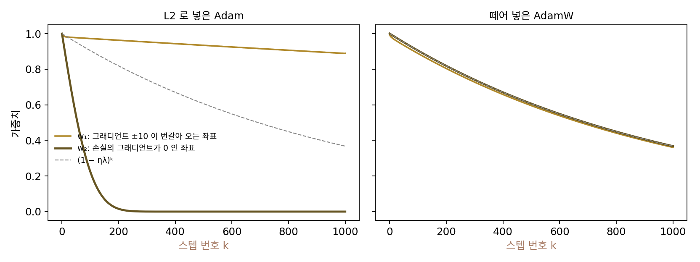
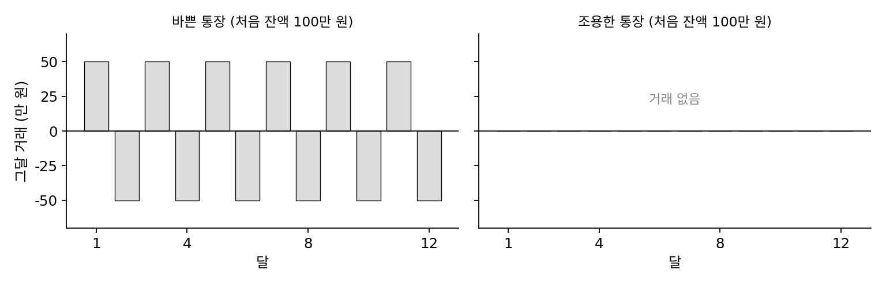
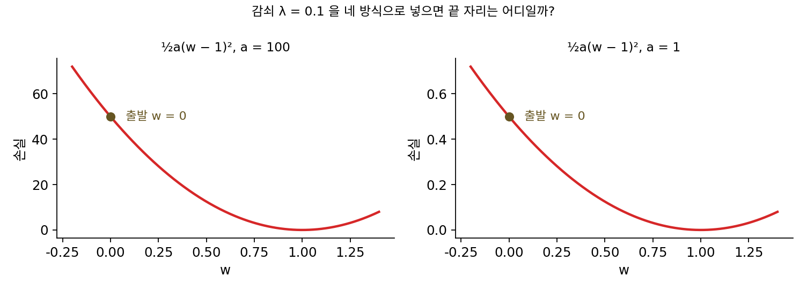
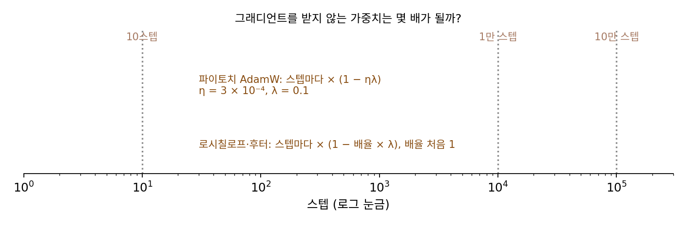

AdamW: 가중치 감쇠를 그래디언트에서 떼어 낸다
학습 데이터를 잘 맞추는 파라미터는 하나가 아니다. 그 가운데 크기가 작은 파라미터가 처음 보는 데이터에도 잘 맞는 경우가 많아서, 신경망을 학습시킬 때는 스텝마다 가중치를 조금씩 0 쪽으로 줄이는 일을 함께 한다. 스텝마다 가중치를 일정한 비율로 줄이는 이 일을 가중치 감쇠라 한다. 경사하강이라면 스텝마다 가중치에 (1 − ηλ)을 곱하는 것과, 손실에 ½λ‖w‖²을 더해 그 그래디언트 λw를 그래디언트에 더하는 것(L2 정규화)이 같은 일이다. 그래서 오래도록 많은 라이브러리가 「가중치 감쇠」 칸에 값을 넣으면 그래디언트에 λw를 더하는 방식으로 구현했다. 그런데 Adam 은 그래디언트를 좌표마다 √v̂로 나눈다. 그래디언트에 더한 λw도 함께 나뉜다면, 가중치는 여전히 스텝마다 같은 비율로 줄어들까?
역사: Adam 은 왜 일반화가 나쁜가
2017년 무렵 이미지 분류에서 가장 좋은 성적은 여전히 모멘텀을 쓴 확률적 경사하강이 내고 있었다. 그해 애시아 윌슨(Ashia Wilson)과 동료들은 Adam 같은 적응적 방법이 학습 데이터에서는 빨리 내려가도 처음 보는 데이터에서는 모멘텀 경사하강보다 못하다는 실험을 여러 태스크에서 보고했다. 날카로운 극소로 가기 때문이라는 설명, 적응적 방법 자체의 한계라는 설명이 나왔다.
독일 프라이부르크 대학의 일리야 로시칠로프(Ilya Loshchilov)와 프랑크 후터(Frank Hutter)는 다른 곳을 봤다. 2017년 11월 14일 아카이브에 올린 첫 판의 제목은 「Adam 의 가중치 감쇠 정규화 고치기」였다. 그들이 출발점으로 삼은 가중치 감쇠는 스티븐 핸슨(Stephen Hanson)과 로리언 프랫(Lorien Pratt)이 1988년에 쓴 꼴, 곧 스텝마다 가중치에 (1 − λ)을 곱하고 그래디언트 스텝을 따로 빼는 것이었다. 그들은 경사하강에서는 L2 정규화와 가중치 감쇠가 학습률만큼 다시 맞추면 같은 일이지만 Adam 에서는 그렇지 않다는 것, 그리고 흔히 쓰는 딥러닝 라이브러리들이 L2 정규화를 구현해 놓고 「가중치 감쇠」라고 부르고 있다는 것을 짚었다. Adam 에 L2 를 넣으면 지나온 그래디언트가 컸던 가중치일수록 덜 줄어든다. 그들은 감쇠를 그래디언트 계산에서 떼어 내 파라미터에 직접 곱하는 판을 내고, 이것으로 Adam 이 이미지 분류에서 모멘텀 경사하강과 겨룰 만해졌다고 보고했다. 논문은 「떼어 낸 가중치 감쇠 정규화」로 제목을 바꿔 2019년 표현 학습 국제 학회(ICLR)에 실렸다.


구현 한 줄 차이였는데 몇 해나 몰랐다는 게 이상해요. 코드를 열어 보면 바로 보이잖아요.

코드를 열면 그래디언트에 λw를 더하는 줄이 보이죠. 그 줄이 틀렸다고 느끼려면 무엇을 알아야 할까요?

경사하강에서는 λw를 더하는 것과 가중치 감쇠가 결과까지 똑같다는 거요. 같으니까 라이브러리를 짠 사람은 어느 방식으로 짜도 됐을 거고요.

그럼 Adam이 나중에 들어오면서 같은 칸을 그대로 물려받은 걸까요? 이름은 가중치 감쇠인데 하는 일은 L2 인 채로요.

그리고 Adam 이 처음 보는 데이터에서 진다는 결과에는 이미 설명이 둘 붙어 있었어요.

날카로운 극소로 간다, 적응적 방법 자체의 한계다. 그럴듯한 설명이 이미 있으면 구현의 한 줄까지 의심하기는 어렵겠네요.

Adam은 그래디언트를 좌표마다 √v̂로 나누잖아요. 그래디언트에 섞어 넣은 λw도 같이 나뉘면, 가중치마다 감쇠가 얼마나 다르게 걸려요?
바쁜 가중치와 쉬는 가중치
차이를 가장 또렷이 보려고 가중치를 둘만 두자. w₁은 스텝마다 손실의 그래디언트 +10과 −10을 번갈아 받아, 가파른 골짜기 벽 사이를 오가는 방향처럼 평균은 0인데 크기는 크다. w₂는 그 입력이 늘 0이라 손실의 그래디언트를 전혀 받지 않는, 학습에 쓰이지 않는 가중치다. 두 가중치 모두 1에서 시작하고, 학습률 η = 0.01, 감쇠 세기 λ = 0.1, Adam 의 기본값으로 1000스텝 돌린다. 감쇠만 따로 걸면 가중치는 (1 − 0.001)ᵏ로 줄어 100스텝 뒤 0.9048, 1000스텝 뒤 0.3677이 되어야 한다.
| w₁ (100 / 300 / 1000스텝) | w₂ (100 / 300 / 1000스텝) | |
|---|---|---|
| 감쇠 없음 | 0.9824 / 0.9824 / 0.9824 | 1 / 1 / 1 |
| L2 로 넣은 Adam | 0.9727 / 0.9535 / 0.8890 | 0.2244 / 0.0002 / 0.0000 |
| 떼어 넣은 Adam | 0.8888 / 0.7277 / 0.3614 | 0.9048 / 0.7407 / 0.3677 |
L2 로 넣으면 두 가중치가 정반대로 움직인다. w₂는 그래디언트가 λw₂뿐인데, Adam 이 그것을 자기 크기로 나누니 스텝마다 학습률 0.01씩 줄어 213스텝째에 0.01 아래로 떨어진다. 감쇠가 기대보다 열 배 넘게 세게 걸린 것이다. w₁은 √v̂가 10 근처라 λw₁ = 0.1이 10으로 나뉘어, 감쇠가 기대의 10분의 1밖에 걸리지 않아 1000스텝 뒤에도 0.8890이다. 떼어 넣으면 두 가중치가 모두 (1 − 0.001)ᵏ를 따라간다. w₁이 조금 더 작은 것은 첫 스텝에 손실의 그래디언트 +10을 받아 0.01만큼 움직인 것이 남아 있기 때문이다. 파이토치 2.13의 torch.optim.Adam(weight_decay=0.1) 과 torch.optim.AdamW(weight_decay=0.1) 로 같은 실험을 돌리면 1000스텝 뒤 (0.8890, 0.0000)과 (0.3614, 0.3677)로 위 표와 같다.

이렇게 가중치 감쇠를 그래디언트에 더하지 않고, Adam 의 스텝과 따로 파라미터에 직접 곱하는 방법을 떼어 낸 가중치 감쇠 (그래디언트와 따로 하는 감쇠 / decoupled weight decay)라 하고, 그것을 쓴 Adam 을 AdamW 라 부른다. 로시칠로프와 후터가 「떼어 낸 가중치 감쇠를 쓴 Adam(Adam with decoupled weight decay)」을 줄여 붙인 이름이다.
L2 로 넣은 Adam 과의 차이는 λw가 분수 밖에 있다는 것뿐이다. 분수 안에 있으면 λw도 √v̂로 나뉘어, 감쇠의 세기가 좌표마다 그 좌표의 지난 그래디언트 크기에 반비례한다. 분수 밖으로 빼면 모든 좌표가 스텝마다 같은 비율 ηλ로 줄어들어, 「가중치를 줄인다」는 원래 뜻이 Adam 안에서도 지켜진다.
ML에서: 큰 언어 모델의 기본 옵티마이저
지금 큰 언어 모델을 학습시키는 논문은 거의 모두 AdamW 를 쓴다. GPT-3 논문은 모든 모델에 가중치 감쇠 0.1을 썼다고 적었고, LLaMA 도 AdamW 에 가중치 감쇠 0.1을 썼다. 파이토치에는 torch.optim.AdamW 가 따로 있고 기본 weight_decay 는 0.01이다. torch.optim.Adam 의 weight_decay 는 지금도 그래디언트에 λw를 더하는 L2 쪽이고, 2.13에서는 decoupled_weight_decay=True 를 함께 넘겨야 AdamW 처럼 동작한다. 칸 이름이 같아 생기는 혼동은 로시칠로프와 후터가 짚었던 그대로 남아 있다.
문제 13. 두 통장의 수수료
두 통장에 각각 100만 원이 있다. 바쁜 통장은 매달 +50만 원, −50만 원이 번갈아 오가고, 조용한 통장은 거래가 없다. 은행이 수수료를 매기는 규칙 가는 매달 거래 뒤 잔액의 2%를 떼고, 규칙 나는 「잔액의 2%」를 그 통장의 최근 돈 움직임 크기(거래와 「잔액의 2%」를 더한 값의 제곱을 이동 평균한 것의 제곱근, 처음 편향은 바로잡음)로 나누고 10만 원을 곱한 만큼 뗀다. 돈이 많이 오가는 통장에 수수료가 지나치게 붙지 않게 하려는 뜻이다. (가) 나 규칙에서 첫 달 두 통장의 수수료는? (나) 12달 뒤 두 규칙에서 두 통장의 잔액은?

나 규칙이 공평해 보여요. 돈이 많이 오가는 통장을 봐주는 거니까, 쉬는 통장은 원래대로 떼겠죠.
쉬는 통장의 「최근 돈 움직임」은 무엇으로 채워지죠?

거래가 0이니까… 「잔액의 2%」 자체요. 잔액의 2%를 잔액의 2%로 나누니까 1, 거기에 10만 원을 곱하면 첫 달 수수료가 10만 원이에요. 바쁜 통장은 2%를 50 남짓으로 나눠서 0.38만 원이고요. 쉬는 통장이 26배 넘게 내요.
12달 뒤 나 규칙은 바쁜 통장 94.1만 원, 조용한 통장 16.1만 원이야. 가 규칙은 거래가 없는 통장이 0.98¹² = 0.7847배라 78.5만 원이고, 바쁜 통장도 73.1만 원으로 둘 다 비슷하게 줄어.
나 규칙의 의도는 바쁜 통장을 봐주는 것이었는데, 실제로 일어난 일은요?

수수료가 「그 통장이 얼마나 바쁜가」에 반비례하게 됐어요. 쉬는 통장에는 매달 거의 정해진 금액이 빠져나가서 잔액의 2%보다 훨씬 많이 떼이고, 바쁜 통장은 거의 안 떼여요. 분모에 수수료 자기 자신이 들어 있어서 그래요.

아까 쉬는 가중치 w₂가 200스텝 만에 0이 된 거랑 똑같네요. L2 를 Adam 안에 넣으면 이 은행이 되는 거고요. 조교님이 지각 감점을 「그 학생의 평소 점수 변동 폭」으로 나누면 성적이 들쭉날쭉한 학생만 봐주는 꼴이 되는 거예요.
문제 14. 경사하강에서는 같다
손실 f(w) = ½a(w − 1)²을 w = 0에서 학습률 0.005로 2만 스텝 내려간다. 감쇠 세기 λ = 0.1이고, 곡률 a는 100과 1 두 경우다. (가) 경사하강에 L2 로 넣을 때와 떼어 넣을 때의 끝 자리는? (나) Adam 에 L2 로 넣을 때와 AdamW 의 끝 자리는? (다) L2 정규화를 더한 손실 ½a(w − 1)² + ½λw²의 최소점과 견주라.

(다)부터 하면 미분해서 0으로 두니 a(w − 1) + λw = 0, w = a/(a + λ)야. 0.999001과 0.909091. 경사하강은 두 곡률 모두 끝 자리가 정확히 이 최소점이야. L2 든 떼어 넣기든 같아.
그럼 Adam 쪽도 L2 는 0.999001과 0.909091로 같아요. AdamW 는 0.999992, 0.999986이에요. 감쇠를 걸었는데 거의 1이네요. 감쇠가 안 걸린 거 아니에요?
L2 로 넣은 Adam 은 왜 정확히 그 최소점에 갔을까요?
L2 는 손실 자체를 바꿔요. 바뀐 손실의 그래디언트가 0인 곳이 하나뿐이니까 어떤 옵티마이저로 가든 거기서 멈추는 거고요.
그럼 떼어 넣은 감쇠는 어디서 멈추죠? 스텝이 0이 되는 조건을 적어 봐요.
손실은 그대로 두고 스텝에 끼어드니까… AdamW 의 스텝 「m̂/√v̂ + λw」가 0인 곳이요.
그래디언트가 0이 아니어도 멈출 수 있다는 거야?

응. 그래디언트가 깨끗하면 m̂/√v̂는 부호가 바뀌지 않는 한 크기가 1 가까이라, 0.1짜리 감쇠는 그래디언트가 아주 작아진 곳에서야 비길 수 있어. 그래서 거의 1에서 멈췄어.

그래서 AdamW 의 λ는 「손실에 더한 페널티의 세기」로 읽으면 안 되고, 「스텝마다 가중치를 얼마나 줄이나」로 읽어야 해요. 실제 학습에서는 미니배치의 노이즈 때문에 바닥 근처에서 m̂/√v̂가 1보다 훨씬 작아지고, 그때 감쇠가 가중치를 실제로 줄여요.
같은 「0.1」이 L2 에서는 목적지를 옮기는 숫자고 AdamW 에서는 스텝에 붙는 숫자군요. 레시피에 「소금 조금」이라고만 쓰면 사람마다 다른 양을 넣는 거랑 같아요.
문제 15. λ = 0.1 은 얼마나 센가
큰 언어 모델을 AdamW(학습률 3 × 10⁻⁴, λ = 0.1)로 학습시키는데, 파이토치의 AdamW 는 스텝마다 가중치에 1 − ηλ을 곱한다. (가) 손실의 그래디언트를 받지 않는 가중치는 1만 스텝, 10만 스텝 뒤 몇 배가 되는가? (나) 감쇠의 시간 척도 1/(ηλ)는 몇 스텝인가? (다) 학습률 스케줄로 학습률이 1 × 10⁻⁴로 줄어 있으면 10만 스텝 뒤에는? (라) 로시칠로프와 후터의 알고리즘은 λ에 학습률이 아니라 학습률 스케줄의 배율(처음에는 1)만 곱한다. 이 꼴에서 λ = 0.1을 그대로 쓰면?

0.1이면 스텝마다 10%씩 줄어드는 거 아니에요? 그럼 몇십 스텝이면 가중치가 다 사라지겠는데요.
파이토치 꼴에서는 무엇을 곱하죠?
1 − 3 × 10⁻⁴ × 0.1 = 1 − 3 × 10⁻⁵요. 1만 스텝 뒤 0.7408, 10만 스텝 뒤 0.0498이에요. 시간 척도는 33,333스텝이고요. 10%가 아니라 0.003%씩이네요.
학습률이 1 × 10⁻⁴로 줄어 있으면 10만 스텝 뒤 0.3679, 곧 e⁻¹이야. 학습률 스케줄이 학습률을 줄이면 감쇠도 같이 약해져.
(라)는요?
스케줄의 배율이 1이면 스텝마다 0.9배라 10스텝 뒤에 0.3487이에요. 민준이 처음 말한 그대로요. 같은 λ = 0.1이 구현에 따라 3000배 넘게 다른 세기네요. 논문의 숫자를 파이토치에 옮길 때는 λ에 학습률을 곱해 쓰는지부터 봐야 해요.
논문 설정표에서 「weight decay 0.1」만 보고 베끼면 안 되는 거네요. 단위 없이 「온도 30」이라고만 적힌 실험 노트를 받은 기분이에요.